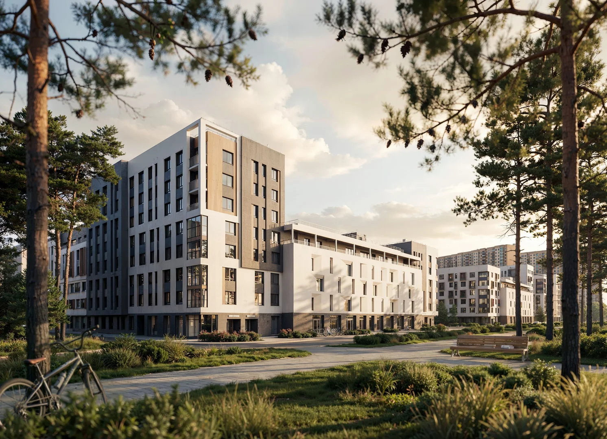

📜 История создания
Федеральный девелопер жилой недвижимости
14 лет ГК Базис создает экосистемы жилья нового поколения. Трансформируя опыт реализации панельных, кирпичных и монолитных решений в мощный драйвер инноваций. Мы с энтузиазмом прокладываем новый путь, осваивая сложные и перспективные ниши возведения объектов на намывных грунтах, что ярко демонстрирует наш проект в районе Гидронамыв в городе Ханты-Мансийск.
14 лет на рынке
6 городов присутствия
9 ЖК реализовано
3 место по ХМАО в ЕРЗ.РФ по объему строительства
210 000 м² введено в эксплуатацию
255 000 м² в стадии проектирования
🚀 Проекты
ЖК Столица
СОВРЕМЕННАЯ ГОРОДСКАЯ ЗАСТРОЙКА
Столичная архитектура домов без давления высотной застройки. Каскадная композиция домов, создающая легко читаемый силуэт.
Сдан, 750 квартир
ЭкоКвартал Нега
Жизнь в городе рядом с природой
Среда, в которой хочется остаться жить. Квартал сочетает загородное настроение и богатую социальную инфраструктуру. Сохраняем баланс между городским удобством и природным спокойствием.
Сдача 4 кв. 2026 года, 205 квартир
Столица Прайм
Здесь комфорт превращается в статус
Жилой квартал бизнес-класса с продуманной концепцией, ориентированной на комфорт и функциональность пространства. Современный навесной фасад с перфорированными алюминиевыми элементами и эффектной вечерней подсветкой. Приватный двор без машин и сквозного доступа. Квартиры с видом на город и личными террасами для отдыха.
Сдача скоро...
Мечта парк
Квартиры комфорт-класса в современном и быстро развивающемся районе Сургута
Микрорайон включает строительство 10 кварталов поэтапно. В рамках развития планируется строительство детского сада, школы, автостоянки, а также парка с прудом.
Сдача скоро...
🏆 Реализованные проекты
🌱ЖК "Березка" 🌇ЖК "Заря" 💌ЖК "Любимый"
🌊ЖК "River House" 🗺️ЖК "Сердце Сибири" 🏖️ЖК "Набережный"
